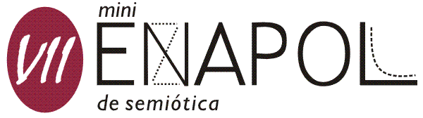

VII m i n i E N A P O L

VII miniENAPOL de Semiótica
Anfiteatro de História - FFLCH-USP
de 30/setembro a 03/outubro de 2008
das 8 às 18 horas
Desde
sua
inauguração em 2001, o miniENAPOL de
Semiótica vem sendo realizado anualmente
na FFLCH-USP, com crescente participação de
estudantes de todos os níveis, além
da presença de renomados professores da área.
Trata-se
de um evento no qual são expostas e discutidas as pesquisas
em andamento dos
pós-graduandos ligados à semiótica e
aos domínios conexos. Alunos de
graduação
envolvidos com pesquisa (Iniciação
Científica, por exemplo) também têm
espaço
para falar de seus trabalhos. Ao mesmo tempo, contamos com a
participação ativa
de membros dos diversos grupos existentes em São Paulo e,
cada vez mais, também
em cidades de diferentes Estados do país, bem como daqueles
que não têm
vínculos de grupo, mas desenvolvem pesquisa nesse campo do
conhecimento.
Curiosidade: a sigla ENAPOL quer dizer Encontro dos Alunos da Pós-Graduação em Semiótica e Lingüística Geral. Todos os anos acontece na FFLCH-USP um ENAPOL geral, todas as áreas confundidas, e, durante os meses subseqüentes, as diversas linhas de pesquisa promovem seus minienapóis setoriais, a fim de propiciar o contato entre os especialistas desta ou daquela área, no âmbito das ciências da linguagem.
As
inscrições para apresentar
comunicação no miniENAPOL de Semiótica 2008 estão
concluídas.
Inscrição
com apresentação
de trabalho - Valores: R$ 20,00 para alunos de
pós-graduação e R$ 10,00 para
alunos de graduação. O pagamento da
inscrição será efetuado pelos
expositores
no dia de sua comunicação, durante o evento.
Inscrição
sem apresentação de trabalho - As
inscrições são gratuitas e podem ser
feitas até o final de setembro.